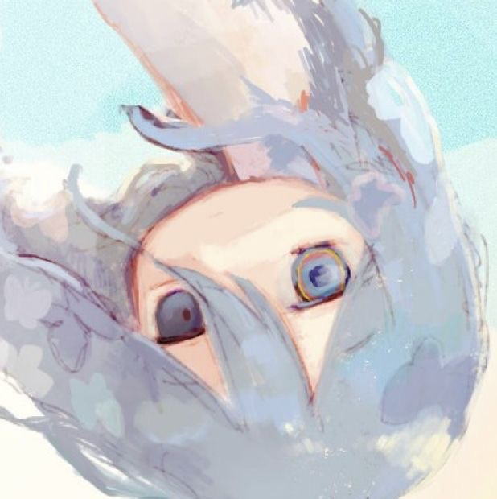

melancholia
⛤
role: no | age: 0-100 | love: music
-------------------------------------------------
I have more
To live for
There's a note in a bottle
Washed ashore
I hear waves
Sing my name
Saying no matter how hard
There's a way
Though I cry
All the time
And struggle out of bed
I'm alive
And I'll live
For myself
For the ones that I love
For the ones that I lost
Dragging my foot forward
Laced with scars and wounds that still hurt
It's so unfair that I'm still here
But I know you'd tell me if you were here
To get up and start moving, what do you fear
Everything is as you left it
Brush off the dust, make a wish
Though I cry
All the time
And struggle out of bed
I'm alive
I'm alive
I'm alive
I'm alive
And I'll live (as you left it— you left it)
For myself (everything is as you left it— you left it)
For the ones that I love (everything is as you left it— you left it)
For the ones that I lost (brush off the dust, make a wish)
click to play audio